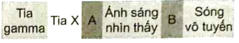

Viết lời giải đầy đủ. Bấm “Nộp để AI gợi ý điểm”: AI chấm gợi ý theo biểu điểm, giáo viên sẽ duyệt điểm chính thức.
1
Thông hiểu
(SBT - Vật lý 11 CTST) Biết cường độ của vi sóng tối đa không gây nguy hiểm cho cơ thể người khi bị phơi nhiễm là $1,5\,W/m^{2}$. Một radar phát vi sóng có công suất $10\,W$, xác định khoảng cách tối thiểu từ người đến radar để đảm bảo an toàn cho người?
2
Thông hiểu
(SBT - Vật lý 11 CTST) Một trạm không gian đo được cường độ của bức xạ điện từ phát ra từ một ngôi sao bằng $5,0\cdot10^{3}\,W/m^{2}$. Cho biết công suất bức xạ trung bình của ngôi sao này bằng $2,5\cdot10^{25}\,W$. Giả sử ngôi sao này phát bức xạ đẳng hướng, tính khoảng cách từ ngôi sao này đến trạm không gian.
3
Thông hiểu
(SBT - Vật lý 11 CTST) Một máy phát sóng vô tuyến AM đẳng hướng trong không gian. Ở khoảng cách $30,0\text{ km}$ từ máy phát này, ta nhận được sóng có cường độ bằng $4,42\cdot10^{-6}\,W/m^{2}$. Tính công suất của máy phát này.
4
Thông hiểu
(SBT - Vật lý 11 CTST) Hệ thống định vị toàn cầu (GPS - Global Positioning System) gồm 24 vệ tinh nhân tạo. Mỗi vệ tinh thực hiện hai vòng quay quanh Trái Đất trong một ngày ở độ cao $2,02\cdot10^{7}\,m$ đối với mặt đất và phát tín hiệu điện từ đẳng hướng có công suất $25\,W$ về phía mặt đất. Một trong các tín hiệu điện từ này có tần số $1575,42\text{ MHz}$. a) Tính cường độ tín hiệu điện từ nhận được ở trạm thụ sóng tại một vị trí trên mặt đất ngay ở phía dưới một vệ tinh. b) Trạm thu sóng nhận được tín hiệu có bước sóng bằng bao nhiêu?
5
Thông hiểu
Thang của sóng điện từ được biểu diễn theo bước sóng tăng dần như Hình 11.1

a) Xác định các loại bức xạ được đánh dấu $A,B$. b) Mô tả ngắn gọn một ứng dụng của tia $X$ trong thực tiễn. c) Chỉ ra hai đặc điểm khác nhau giữa sóng điện từ và sóng âm.
6
Thông hiểu
(SBT - KNTT) Sóng vô tuyến ngắn có thể được sử dụng để đo khoảng cách từ Trái Đất đến Mặt Trăng, bằng cách phát một tín hiệu từ Trái Đất tới Mặt Trăng và thu tín hiệu trở lại, đo khoảng thời gian từ khi phát đến khi nhận tín hiệu. Khoảng thời gian từ khi phát tới khi nhận được tín hiệu trở lại là $2,5\,s$. Biết tốc độ của sóng vô tuyến này là $3\cdot10^{8}\,m/s$ và có tần số $10^{7}\text{ Hz}$. Tính: a) Khoảng cách từ Mặt Trăng tới Trái Đất. b) Bước sóng của sóng vô tuyến đã sử dụng.